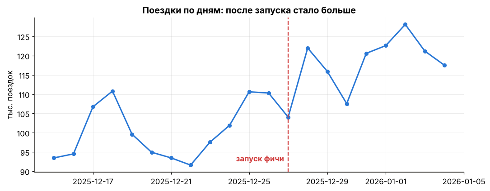
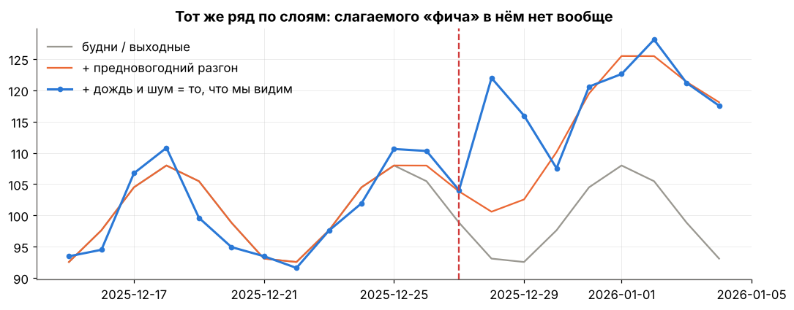
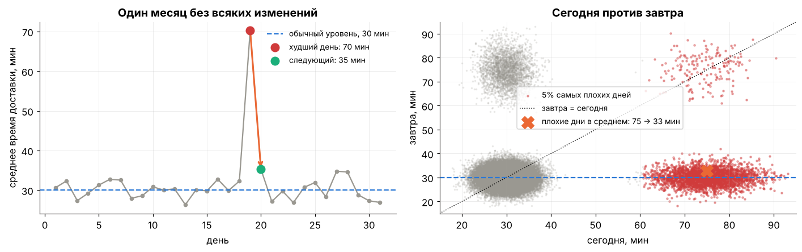
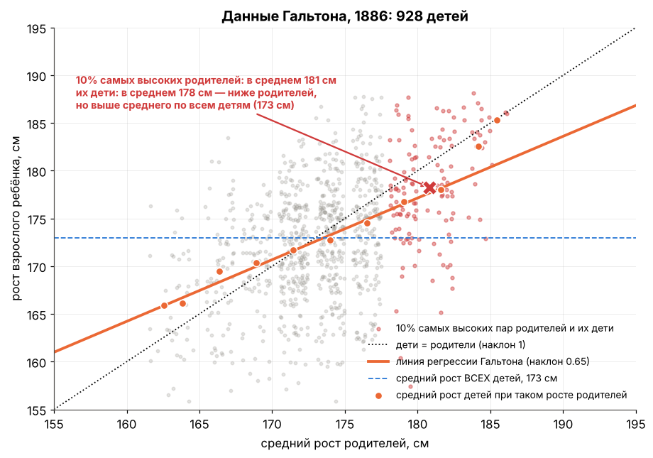

Занятие 1 · блок 1
Фича сработала?

Алиса, глянь! Запустили «вернись через 20 минут» — поездки сразу подскочили. Раскатываем на всех?
Это самый частый вопрос, который задают аналитику, и самый опасный: на него очень легко ответить «да», глядя на график «до и после».
Герои курса. Боб — продакт-менеджер Такси: умный, энергичный и всё время торопится с выводами. Алиса — аналитик, работает первый месяц: толковая, но спешит и попадает в ловушки — твоя задача её ловить. Котейка — мудрый кот из мешка: в мешке живут все наши данные, и только он знает, что внутри. Ответов Котейка не даёт — только правильные вопросы.
«Вернись через 20 минут — будет на 200 ₽ дешевле»
В часы высокого спроса цена в Такси растёт, и часть людей закрывает приложение. Менеджер придумал фичу: показывать прогноз — «вернись через 20 минут, будет на 200 ₽ дешевле». Фичу выкатили. Вот график поездок, который Боб принёс Алисе.


После запуска поездок стало больше примерно на 15%. Фича работает — раскатываем!
Вопрос залу. Алиса права? Что ещё могло измениться одновременно с запуском? Каких данных не хватает, чтобы оценить влияние именно фичи?
Ответ
Одновременно с запуском могли измениться: сезонность — день недели, конец месяца, предновогодний разгон; погода — в дождь поездок больше; праздники и события; параллельные запуски — промо, маркетинг, другая фича; трафик — новая реклама, изменения у конкурента; логирование — поездки стали иначе считать.
Не хватает контрольной группы — похожих пользователей без фичи за те же дни.
Из чего сложен этот график
Этот ряд сгенерирован. В формуле четыре слагаемых: недельная сезонность, предновогодний разгон, два дождливых дня и случайный шум. Слагаемого «фича» в нём нет вообще.

А график «после стало больше» выглядит ровно как успех. У графика «до и после» нет встроенного ответа на вопрос «почему»: внешний мир меняется вместе с продуктом.
До и после ≠ эффект.
Параметры генератора
База 100 тыс. поездок, синусоида с периодом 7 дней и амплитудой 8, линейный рост до +25 за последние 11 дней, дождь +18 и +12 в дни 13–14, шум .
Самый медленный день доставки
Обычно доставка занимает около 30 минут. В самый медленный день месяца — 70. Команда в тот же вечер поменяла настройку распределения заказов, и на следующий день получилось 35.
Настройка сэкономила 35 минут!
Уже пишу команде: поздравляю, минус 35 минут доставки!
Вопрос залу. Стоит ли Алисе отправлять поздравление? Почему мы сравниваем именно с этим днём? Что было бы на следующий день, если бы настройку не меняли?
Ответ
День выбран потому, что он экстремально плохой: в нём совпали временные факторы — погода, пробки, сбой, нехватка курьеров — и случайные колебания. На следующий день эти совпадения, скорее всего, не повторятся, и время вернётся ближе к обычному само.
Настройка могла помочь, ничего не изменить или даже ухудшить — по этой паре дней мы не знаем. Проверим симуляцией.
Задача 1. Худший день без всякой настройки
Пусть настройку никто не трогал. Среднее время доставки колеблется около 30 минут (±3), но примерно раз в 20 дней случается плохой день — снегопад, сбой, нехватка курьеров — и время подскакивает в среднем на 45 минут. Плохие дни независимы. Найдём в каждом месяце худший день и посмотрим на следующий. Повторим для 10 000 «месяцев».
- Предскажи до запуска: на сколько минут в среднем «улучшится» день после худшего?
- Запусти ячейку и сравни.

Решение
Шаг 1. Что выдала симуляция. Худший день месяца в среднем ≈ 68.7 мин, следующий ≈ 31.0 мин: «экономия» ≈ 37.7 минуты без какого-либо изменения — почти как «минус 35» у Алисы.
Шаг 2. Левый график. Один из симулированных месяцев — ровно наш кейс: худший день 70, следующий 35, никакой настройки не было. Стрелка «вниз» нарисовалась сама.
Шаг 3. Правый график. Каждая точка — пара «сегодня → завтра». Если бы завтра повторяло сегодня, точки лежали бы на диагонали. Красное облако плохих дней лежит ниже диагонали, вокруг линии 30: завтра у них обычное. Их среднее — примерно 75 → 33.
Если выбирать момент для сравнения за то, что он необычный, улучшение гарантировано — и его можно приписать чему угодно: настройке, новому менеджеру, полнолунию.
Почему инструкторы считали, что ругать полезнее, чем хвалить
Даниэль Канеман консультировал инструкторов израильских ВВС. Один из них возразил: «Когда я хвалю курсанта за отличную посадку, следующая обычно хуже. Когда ругаю за ужасную — следующая лучше. Так что не говорите мне, что похвала работает».
Инструктор видел то же, что мы в симуляции: после необычно хорошей посадки следующая чаще ближе к обычной — и после необычно плохой тоже. Его слова тут ни при чём.
Регрессия к среднему
Если наблюдение отобрано за то, что оно экстремальное, следующее измерение того же объекта в среднем окажется ближе к обычному уровню — даже без каких-либо изменений. Откат идёт с любой стороны: очень плохое становится лучше, очень хорошее — хуже.
Слово «регрессия» здесь буквальное: лат. regressio — «возвращение, движение назад». Это не регрессионная модель, хотя её название пошло именно отсюда.
Гальтон, рост детей и откуда взялась «линейная регрессия»
В 1886 году Фрэнсис Гальтон собрал рост 928 взрослых детей и их родителей. У очень высоких родителей дети тоже высокие — но в среднем ниже родителей. У очень низких — выше родителей. Гальтон назвал это regression towards mediocrity — «возврат к посредственности».
Чтобы описать эффект, Гальтон провёл через облако точек прямую, и её наклон оказался меньше единицы. Её стали звать линией регрессии, а потом название прилипло к самому методу. Так что «линейная регрессия» названа в честь эффекта отката к среднему, хотя никакого отката в самом методе нет.

Пунктир — мир, где дети в точности повторяют родителей. Оранжевая линия — то, что получилось на самом деле: она положе. У самых высоких родителей, 181 см, дети в среднем 178 — всё ещё высокие, но ближе к середине.
Вопрос залу. Возьмём самых высоких детей. Какими в среднем окажутся их родители: выше детей, такими же или ниже? Что это говорит о том, «тянет» ли что-то рост к среднему?
Ответ
У 10% самых высоких детей (в среднем 183 см) родители в среднем 177 см — ниже детей и ближе к среднему по всем родителям, 174 см.
Откат работает в обе стороны. Если бы существовала сила, «тянущая» потомков к середине, она не могла бы одновременно делать родителей высоких детей ниже их.
Регрессия к среднему — следствие неполной корреляции, здесь . Рост ребёнка — это «наследуемая часть» плюс случайная добавка. Отбирая экстремальных по одной переменной, мы отбираем и удачную случайную добавку, а она не повторяется.
Для стандартизованных величин линия регрессии . При предсказание всегда ближе к среднему, чем , — в какую сторону ни регрессируй.
О данных
Рост дочерей Гальтон умножил на 1.08, чтобы сравнивать с сыновьями; рост родителей — среднее отца и матери, рост матери тоже ×1.08. Рост в таблице округлён, поэтому на графике точки слегка разброшены.
Чемпионы и отстающие
Проверим Гальтона на нас самих. Раунд 1: ответь в боте любым целым числом от 1 до 100 — первым, что пришло в голову. Пять самых больших — наши «чемпионы», пять самых маленьких — «отстающие». Раунд 2: сразу же ещё одно число от 1 до 100.
Вопрос залу. Как сыграют чемпионы и отстающие во втором раунде?
Ответ
Числа случайные и независимые, поэтому во втором раунде у любой группы ожидание около 50. Чемпионы раунда 1, в среднем около 90, во втором раунде дают около 50, отстающие, около 10, — тоже около 50.
Это чистая регрессия к среднему: отбор по экстремальному значению отбирает удачу, а удача не повторяется. У Гальтона связь частичная, , — и регрессия частичная; здесь связи нет, , — регрессия полная.
Похвалили чемпионов — они сдали, отругали отстающих — подтянулись. Ругать полезнее? Нет: отобрали по крайности — дальше будет ближе к среднему, что бы мы ни делали.
Задача 2. Сравним с похожей группой
Есть похожая зона доставки, где настройку не меняли. Снегопад накрыл обе зоны, и за те же два дня среднее время там изменилось с 65 до 40 минут.
- Посчитай изменение в каждой зоне.
- Посчитай разницу изменений. Что она оценивает?
- Какие условия нужны, чтобы верить этой разнице как эффекту настройки?
- Можно ли по этим четырём числам уверенно сказать, что настройка помогла? Пока ответь на глаз — точно посчитаем, когда научимся мерить шум самой оценки.
Решение
Шаг 1. Изменения. Зона с настройкой: мин. Зона без настройки: мин.
Шаг 2. Разница изменений. минут. Это оценка эффекта настройки за вычетом того, что произошло бы и так — регрессии, погоды, общего тренда, — если зоны сопоставимы.
Шаг 3. Условия. Зоны похожи и в них одинаково измеряют время; без настройки они менялись бы одинаково — параллельные тренды; ни в одной из них не было своих событий. Это идея difference-in-differences, «разность разностей»; подробно — на занятиях про A/B.
Про уровни. 70 и 65 не обязаны совпадать: метод сравнивает изменения, а не уровни. Наоборот, 65 в контрольной зоне в тот же день — хороший знак: её накрыл тот же снегопад. Обе зоны и на второй день выше 30 — снегопад был двухдневным; метод это переживает, если снег был одинаковым.
На глаз — вряд ли: день в каждой зоне шумит на ±3 минуты, а оценка собрана из четырёх таких дней, так что её шум сопоставим с самим эффектом в 10 минут. Точный расчёт — когда дойдём до стандартной ошибки.
Худший из пятидесяти — на глаз
Боб придумал ритуал: каждую неделю разбирать на планёрке город с самым долгим временем доставки. Городов 50, и пусть все они одинаковые — отличаются только случайностью. Насколько худший город недели окажется хуже среднего — просто так?
Запиши догадку: посчитаем в блоке 3, когда разберёмся с распределениями.
До и после — не эффект
До и после ≠ эффект. Внешний мир меняется вместе с продуктом, а моменты, отобранные за экстремальность, сами возвращаются к норме. Нужен контроль — то, что было бы без изменения.